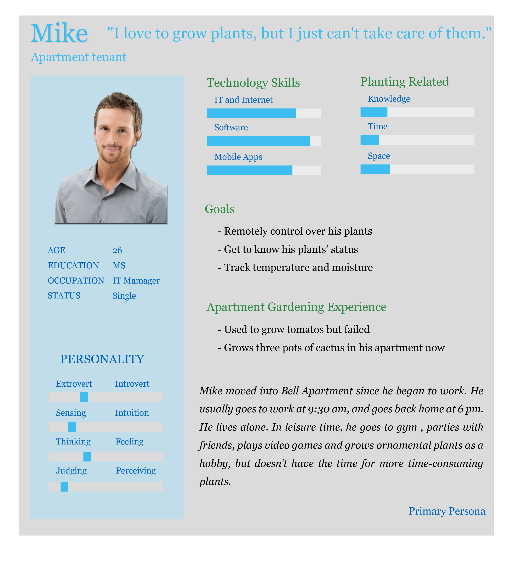
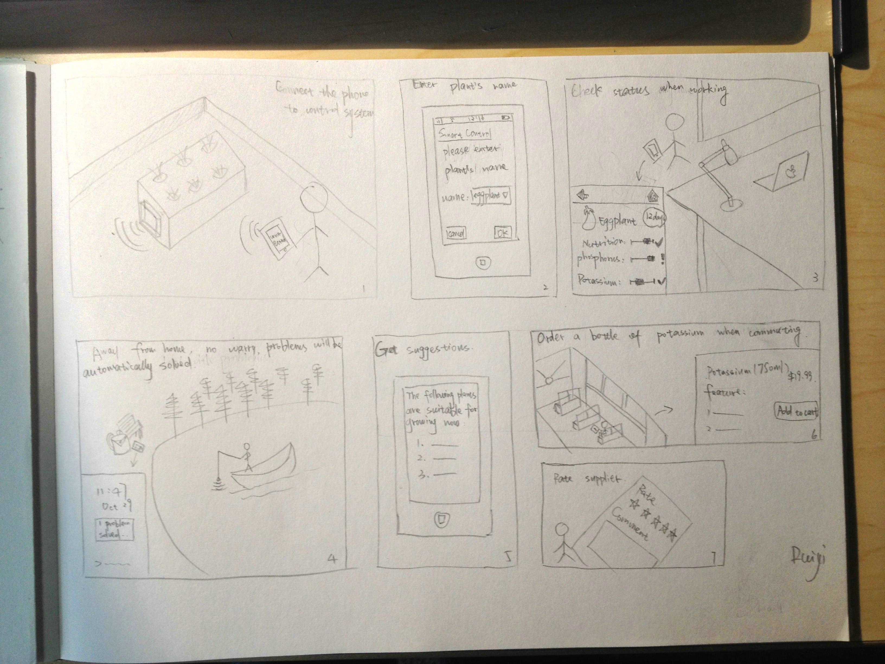
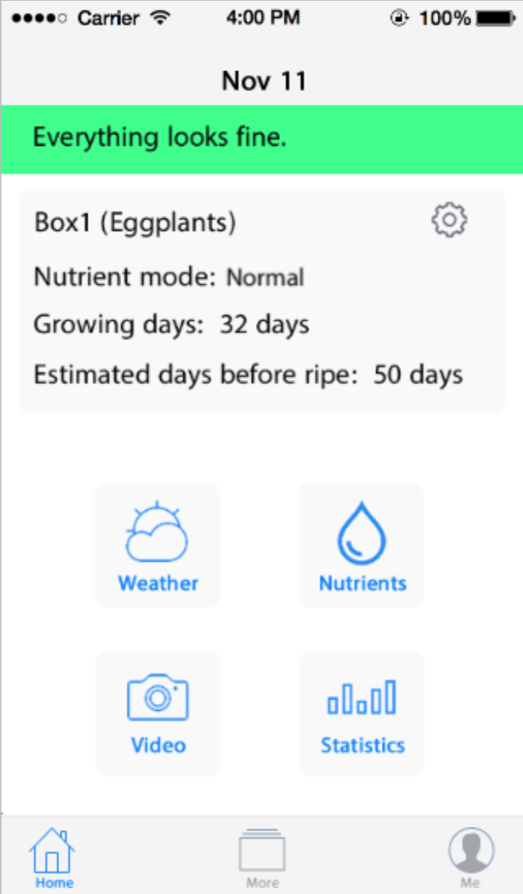

SmartPonics
A self-control rooftop hydroponics garden with mobile control that helps people living in apartments grow plants easily.
Team Role
- UX/UI Designer
Duration
- September 2014 - December 2014
Project Description
Our prefabricated, remotely controlled hydroponics system provides a vegetable growth medium for urban apartment buildings with little or no gardening space. The “SmartPonics” system is a rooftop based hydroponic system that users can interact with via phone, tablet or desktop UI to observe plant growth, manipulate the nutrient solution and set specific watering times.
SmartPonics uniquely combines a prefabricated, ready-made nutrient film method with a digital regulation system that gives both casual and advanced gardens control over their rooftop crop. This rooftop growth system would also add value to apartment and office buildings fitted with weight bearing rooftops.
The hydroponic design has been simplified to scale to different roof spaces and the software monitoring enablement allows users to check their crop virtually. Figure 1 shows the typical design of our hydroponics for flat roofs, whereas Figure 2 shows the adjusted design for sloped roof. Figure 3 shows an interface of the remote control software.
User Research
To gain a more user centered understand of our original design question: “How to use technology to help people living in apartments grow plants easily?”, our team used surveys, interviews, field investigation, historical analysis and competitive product surveys to better inform the development of a viable prototype for rooftop hydroponic gardens that can be controlled with mobile applications.
Survey
An online questionnaire with at most 35 questions was spread out, and 86 responses were received.
SurveyField Investigation
Since the mobile application investigation was performed during interviews, we needed to get a more coherent grasp of hydroponic technologies and see how they might integrate into a communal garden setting.
We visited the Cascade P-Patch in South Lake Union and the UW Farm to gather photos of plot organization and amenities. For the hydroponic investigation we visited the indoor Sun Shoppe in Fremont multiple times to confirm our design idea to the realities and requirements of hydroponic gardening.

Historical Analysis
We gathered an ad-hoc status of the hydroponic landscape in our field investigation, but needed to see what methods had previously been successful and why. Through historical analysis, we could see if our idea had been tried before or if NFT was actually the ideal technique.
Competitive Product Survey
From our previous interview with Shaun Murphy at the Indoor Sun Shoppe, we were told of potential competitor equipment. They are: the iPonic controller from Link4 and IntelliDose Nutrient & Ph controller from American Hydroponics. The Link4 iPonic controller focuses on the commercial market rather than individual/home markets, while IntelliDose has already began to expand their market from commercial market to individual large scale operations.
Design Requirements
Required Features
- remote control, over phone
- track temperature, humidity, irrigation, nutrient solution
- feedback system, when things go wrong
- suggestion on what to grow, according to local weather
- statistic data visualization, easy to analyze
- DIY, find the best formula and repeat
- planting tutorial
- require emergency maintenance from company
- rooftop power source
- wifi source
Add-on Features
- camera, used to monitor or take pictures
- online store
- expert support
- share with friends
Persona

Scenario
1. Mike’s apartment offers a new high-technology community garden on the apartment roof. This garden is equipped with automatic growing control system and can be monitored and controlled remotely through smartphone app. He rents one set and sets up his phone, connects it to this system.
2. Before leaving for work in the morning, Mike checks his newly grown eggplant by control app on his phone. It looks nice through the camera. At lunch, he opens his smartphone and enters the control app. It shows that all the nutrition, water, sunshine this eggplant now needs is supplied properly, it also shows the estimated days needed before it’s ripe.
3. Out of town for a vacation, Mike enjoys the beautiful scenery and remotely monitors his eggplant through his phone in the meantime. The concentration of nitrogen is getting lower but the control system has already dealt with that, nothing to worry about.
4. The self-grown eggplant tastes great. This time, Mike wants to try orchid. Before he buys some prefabricated orchid seedlings, he asks the control app for advice. After entering “orchid”, he is reminded by the app that current weather is not suitable for growing orchid; besides, the app makes several suggestions on what to grow next. He chooses one plant and then a list of plant stores shows up, ranking by scores given by other users. He chooses a store with a high ranking and orders several prefabricated seedlings there.
5. When on a bus, Mike’s phone gets a notification. He opens it and find out it's an alarm from the growing control system. It says that based on the daily consumption, the potassium left can only hold for another 10 days, so Mike needs to buy more potassium. He then calls the plant store from the referral list he usually goes to and orders a bottle of potassium. Two days later, he receives the bottle of potassium and replaces the old one with it. The alarm sign on the homepage of the control app then disappears.
Storyboard
Sketch

Prototype

Usability Testing
This study intended to determine how effectively the SmartPonics application’s design could guide users through the application and hardware setup process, check supply levels and manipulate settings. We conducted user testing between Nov 17 – Nov 19.
Our goals were to observe seamless navigation and setup by users with minimal confusion. We tested 10 participants. Our methodology was as follows:
We began the study by sending users a confirmation email that their SmartPonics account had been created and their apartment manager had assigned them three hydroponic boxes. This “Welcome” email set the context for the user, eliciting the expectation that they would be setting up the application during the test. We had users complete four tasks, described below, and took notes on whether their experience was as fluid as we hoped, noting where user doubt and misdirection occurred.
Usability Testing ReportNext Project

QQ Browser Forum Product Manager, UX Designer
An official forum supporting QQ Browser, serving as a discussion board for users, and a method to collect feedback from users.